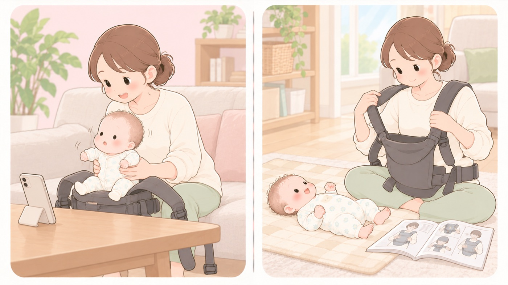

SNSの「裏技」を試す前に
同じ種類の製品でも、メーカーによって禁止事項が違う。他人のやり方は真似できない
育児の「裏技」は、見た瞬間に試したくなるようにできています。しかしベビー用品は、メーカーごとに安全対策の考え方も製品の仕様も違い、注意事項や禁止事項にも差があります。ある製品で問題のない使い方が、別の製品では禁止されていることがあります。

左は危険な例、右は安全な例です。- すること：その使い方が、手元の取扱説明書に書いてあるか確認する
書いていない使い方は、メーカーが想定していない使い方です。説明書が見つからなければ、メーカーのサイトで型番から探せます。 - すること：出典をたどれるか見る
公的機関や学会の情報か、個人の経験談か。このサイトも各項目に根拠を置いています。たどれない情報は、ひとまず保留にします。 - すること：迷ったら、メーカーのお客様窓口に聞く
その製品で許される使い方かどうかは、メーカーだけが答えられます。 - しないこと：「うちの子は大丈夫だった」を根拠にしない
事故は、同じことを何度もやったうちの一度で起こります。 - しないこと：対象月齢・体重の下限が書かれていない情報を信じない
下限を下回る時期の使用が、いちばん危険です。 - すること：海外製品を並行輸入で買うときは、日本語の説明書の有無を確認する
日本語の取扱説明書がなく、問い合わせもできない場合があります。海外規格は適用月齢や設計の考え方が国内基準と違います。 - しないこと：広告かどうかを確かめずに受け取らない
「PR」「提供」の表示を探します。表示のないステルスマーケティング広告であることを隠して宣伝すること。2023年10月から景品表示法違反になる。は景品表示法で禁止されています。
抱っこひも ── 「ゆるめ」の装着で落下している
国民生活センターには、2019年度からの約5年10か月で抱っこひもに関する事故が176件寄せられ、 うち138件が子どもの落下でした。4件に1件の割合で骨折や頭蓋内損傷に至っています。 重篤なけがは0歳児、とくに月齢の低い子どもで起きています。
検証では、ゆるく装着すると取扱説明書どおりの装着よりすき間が大きくなり、 姿勢によって落下の危険が高まることが確認されています。
東京都の報告書によると、抱っこからおんぶへの変更方法を説明している製品がある一方で、 子どもを乗せた状態での抱き方の変更を禁止している製品があります。 必ず手で支えるよう書いている製品も、横抱っこに限って書いている製品もあります。 だから、他の人がやっている方法をそのまま真似できません。 自分の持っている製品の取扱説明書だけが、その製品の正解です。
はちみつ ── レシピは安全性を保証しない
1歳未満にはちみつを与えると、乳児ボツリヌス症を起こすことがあります。 まれに死亡例もあり、ボツリヌス菌は熱に強く通常の加熱では死にません （4〜6か月タブ「はちみつと乳児ボツリヌス症」）。
にもかかわらず、投稿型のレシピサイトには、はちみつを使った離乳食のレシピが載ることがあります。 投稿されたレシピや「作ってみた」報告は、安全性を確かめたものではありません。 加熱すれば大丈夫、少量なら大丈夫、という書き方を見かけても、どちらも当てはまりません。
よく見かける言い方と、確かめ方
たとえば、次のような言い方を見かけます。 右側は「正解」ではなく、どこを見れば自分の場合の答えが分かるかです。
- 「抱っこひもを折りたたむと、ヒップシートとして使える」
- その使い方が手元の取扱説明書にあるかを見ます。 たとえばエルゴベビーのベビーキャリアの説明書には 「本製品は、乳幼児を抱っこやおんぶをするための1人用ベビーキャリアです」と用途が書かれ、 他の用途に使わないこと、改造や不当な修理をしないことが警告として挙げられています。 ヒップシート機能のある製品なら、その使い方は説明書に載っています。
- 「ベルトはゆるめのほうが、赤ちゃんが苦しくない」
- 国民生活センターの検証では、ゆるく装着すると取扱説明書どおりの装着よりすき間が大きくなり、 姿勢によって落下の危険が高まりました。実際に、前かがみになった拍子に 脇からすり抜けて落ちた事例があります。
- 「吐き戻しが減るので、タオルを入れて少し傾ける」
- こども家庭庁は、柔らかいクッションや傾斜のあるマットレスを避け、 身体が沈み込みにくく傾斜のない寝具を使うよう案内しています。
- 「肌の保湿は、薬を塗ってラップで覆うとよく効く」
- 生後3か月の赤ちゃんが、軟膏のついた食品用ラップフィルムで顔を覆われ、 窒息して亡くなった事例があります。頭皮を覆っていたラップが体動でずれ、 鼻と口をふさいだと考えられています。この月齢では、顔にかかったものを自分で取り去れません。 皮膚の治療法は、自己流にせず医師の指示どおりに行います。
📚 読んでおくと役に立つ本
PR- エビデンスの扱い方そのものを書いた本を1冊持っておくと、個別の情報を自分で判断できます。
- 子どもの事故に特化した本は、このサイトと同じ範囲を体系立てて読めます。
- 情報リテラシーの入門書は育児向けではありませんが、「誰が何のために出した情報か」を見る型が身につきます。
- 医師が本当に伝えたい 12歳までの育児の真実（今西洋介）小児科医。情報の見分け方の土台になるAmazonで見る →
- 小児科医が教える「子どもを事故から守る本」（坂本昌彦）小児科医。事故の型ごとにまとまっているAmazonで見る →
- フェイクニュースを科学する 拡散するデマ、陰謀論、プロパガンダのしくみ（笹原和俊）デマが広がる仕組みを知るAmazonで見る →
- 新子どもの事故防止マニュアル事故の型ごとに、起きる仕組みから書いてあるAmazonで見る →
- はじめてママ&パパの育児 0〜3才赤ちゃんとの暮らし0〜3才。写真つきで月齢ごとに引けるAmazonで見る →
- 子どもの病気・救急 ぜったい これ知ってて！救急にかかる判断を、症状別にAmazonで見る →
リンクはAmazonアソシエイトリンクです。当サイトはアフィリエイトプログラムに参加しています。Amazonのアソシエイトとして、当サイトは適格販売により収入を得ています。 選び方の方針
この項目の根拠
- 抱っこひもからの子どもの落下に注意！─生後数カ月の子どもが頭蓋内損傷などの重篤なけがを負っています─（国民生活センター）（新しいタブで開きます）
2019年度から約5年10か月で176件の事故情報、うち138件が落下、4件に1件が骨折や頭蓋内損傷、0歳児とくに低月齢で重篤なけが、装着後にサイズ調整していなかった事例、ゆるい装着では取扱説明書どおりの装着よりすき間が大きく落下の危険が高まるという検証結果、取扱説明書に従って正しく装着するというアドバイス。 - 抱っこひも等の安全対策 東京都商品等安全対策協議会 報告書（東京都・PDF）（新しいタブで開きます）
メーカーごとに安全対策の考え方と製品の仕様が異なり注意事項・禁止事項にも差があること（抱っこからおんぶへの変更方法を記載する製品と、子どもを乗せた状態での抱き方変更を禁止する製品がある等）、海外製品の並行輸入では日本語の取扱説明書がない場合があること、海外規格は適用月齢や設計思想がSG基準と異なること。 - ハチミツを与えるのは1歳を過ぎてから。（厚生労働省）（新しいタブで開きます）
1歳未満の乳児にハチミツやハチミツ入りの飲料・お菓子を与えないこと、ボツリヌス菌は熱に強く通常の加熱や調理では死なないこと、まれに死亡例もあること。 - Injury Alert No.139 食品用ラップフィルムの用途外使用による窒息（日本小児科学会・PDF）（新しいタブで開きます）
生後3か月の乳児が、軟膏のついた食品用ラップフィルムで顔面を覆われて窒息した事例。頭皮を被覆したラップが体動で顔面方向にずれて鼻や口を塞いだ可能性、3か月では顔に被さったラップを取り去る発達段階になかったこと。 - エルゴベビー・ベビーキャリア OMNI 360 取扱説明書（ダッドウェイ・PDF）（新しいタブで開きます）
「本製品は、乳幼児を抱っこやおんぶをするための1人用ベビーキャリアです」と用途が定められ、他の用途に使用しないこと、改造や不当な修理をしないことが警告として記載されていること。 - 赤ちゃんが安全に眠れるように ～1歳未満の赤ちゃんを育てるみなさまへ～（こども家庭庁）（新しいタブで開きます）
柔らかいクッションや傾斜のあるマットレスを避け、身体が沈み込みにくく傾斜のない寝具を使うこと。1歳になるまではあおむけに寝かせること。 - 赤ちゃんの股関節脱臼 ─ 正しい知識と早期発見のために（日本小児整形外科学会）（新しいタブで開きます）
赤ちゃんはO脚で、カエルのようにお股をM字に開いているのが正常で、股関節の動きを自由にさせる扱いがよいこと。 - 令和5年10月1日からステルスマーケティングは景品表示法違反となります（消費者庁）（新しいタブで開きます）
令和5年10月1日から、事業者の表示であることを一般消費者が判別しにくい表示（ステルスマーケティング）が景品表示法違反となったこと。インフルエンサーに依頼して広告を行う事業者が規制の対象になること。